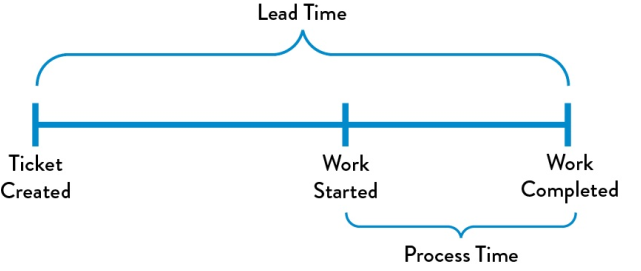
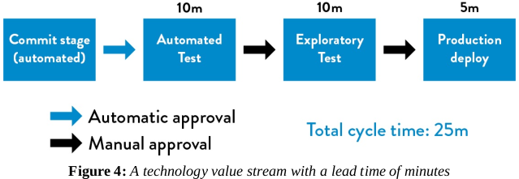
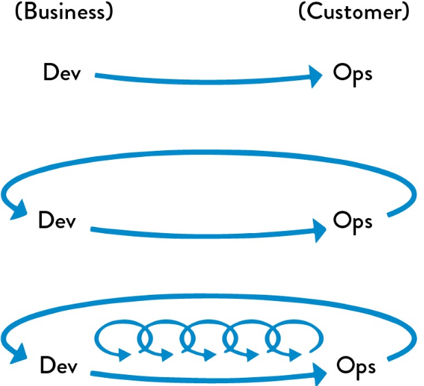
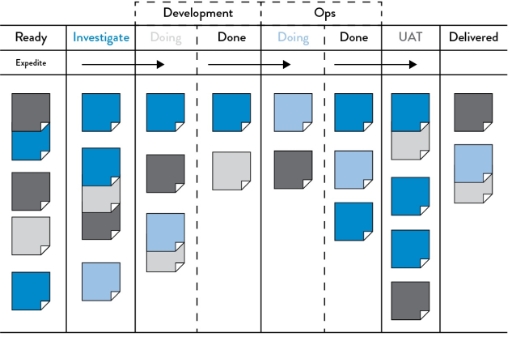
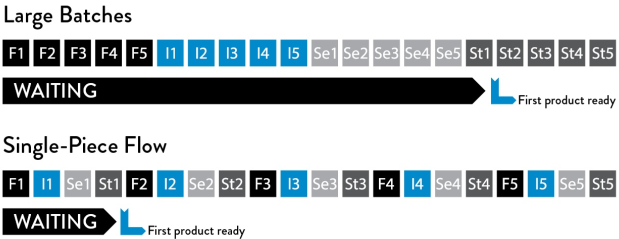

PARTE 1: aprender os princípios do Flow, do Feedback e do Continual Learning
Fundamentos derivados do Lean, Theory of Constrains e do movimento Toyota Kata. Para muitos, é uma continuação lógica do Agile
Lean Movement
Dentre os seus dogmas inclui:
- Manufacturing lead time: the total time required to manufacture an item, including order preparation time, queue time, setup time, run time, move time, inspection time, and put-away time.
- Pensar em diminuir esse tempo é essencial para a qualidade do trabalho e dos funcionários envolvidos.
Manifesto Agile
Conjunto de valores contra o desenvolvimento de software 'pesado'.
Preferência a escalas curtas de entrega de software funcional (entre semanas a meses)
Preferência a curtas entregas incrementais ao invés de grandes entregas (waterfall releases)
Preferência a times pequenos e auto-motivados.
Movimento Continuous Delivery
Papel em que o código esteja sempre em estado 'deployável'.
Toyota Kata
Criar uma estrutura para a prática habitual para a melhoria do trabalho diário.
Agile, Continuous Delivery e os 3 Ways
Manufacturing Value Stream
Value Stream é a sequência de atividades que a organização determinada para entregar a tarefa solicitada
Design, produção e entrega do bem ou serviço e seus fluxos.
Foco no tempo de deploy.O objetivo é que as fases de teste e operação aconteçam simultâneas ao design/desenvolvimento.

Lead time = tempo do cliente. Por isso existe uma tendência em focar nele. Entretanto, é importante reparar no tempo do Process Time dentro do Lead time, acabará servindo como métrica de eficiência.
Comumente o tempo de deploy pode levar meses, principalmente em grandes organizações. Num cenário ideal, esse tempo seria menor, o time receberia o feedback mais rapidamente.Conseguimos isso com a checagem contínua das pequenas mudanças de código, testagem automatizada e deploy. Esse processo pode ser acelerado com arquitetura modular e bem encapsulada, que permita que pequenos times trabalhem nela.

%C/A
Métrica que verifica o percentual de completo e acurado do produto. Reflete a qualidade de cada passo e pode ser obtida perguntando ao cliente a proporção de tempo em que ele recebe partes 'usáveis' do trabalho sem precisar corrigir ou esclarecer algo.
Os 3 Ways
Princípios básicos do devOps.
- First Way: fluxo rápido da esquerda para a direita. Do desenvolvimento para operações para o cliente. Para melhorar o fluxo deixamos o trabalho visível, reduzimos o tamanho dos 'batchs' e os intervalos de trabalho construído.Construção contínua, integração, teste e deploy.

- Second Way:rápido e constante fluxo do feedback da direita para esquerda. Requer feedback rápido, permitindo rápida detecção e recuperação.
- Third Way: criação de uma cultura que incentiva o apelo científico, dinâmico e metodológico à experimentação e à tomada de riscos.
The First Way: princípios do Flow
Fluxo suave de trabalho entre setores de Desenvolvimento e Operação, para entregar valores mais rapidamente.
- Deixar o trabalho visível: diferente dos processos físicos, nos processos digitais não dá pra perceber de imediato onde o fluxo está travado. Para ajudar a equipe a entender onde os fluxos estão travados devemos deixar nosso trabalho o mais visível possível.Os melhores métodos são:
- Criação de boards de trabalho visuais
- Kanban Boards
- Sprint Planning

- Limitar o 'Work in Process': o trabalho diário é marcado por demandas urgentes. Estudos mostram que mesmo tarefas simples aumentam significativamente de dificuldade quando em execução de múltiplas tarefas ao mesmo tempo.Kanban boards ajudam a limitar múltiplas tarefas. Limitar o WIP também ajuda a ver os problemas.
- Reduzir os intervalos e o tamanho dos batchs: batchs grandes demandam grandes níveis de WIP, levando ao aumento do tempo de conclusão e baixa qualidade.Ou seja, nem sempre a produção em larga escala de cada processo é a forma mais eficaz.
- Reduzir tamanho dos batches
- Menor WIP
- Tempo de produção mais rápido
- Detecção de erros mais rápida
- Menor 'retrabalho'

- Redução da transferência de responsabilidades (handoffs): muitas vezes temos um longo tempo de deploy devido a centenas ou milhares de operações solicitadas, além de inúmeros departamentos envolvidos (criação, teste, administração de servidor, segurança, etc.). Lidar com esses diversos times também requer coordenação, agenda, comunicação, etc., e isso pode demandar muito tempo. A cada transferência alguns conhecimentos são inevitavelmente perdidos. Uma das formas de se evitar handoffs é automatizando partes do trabalho ou reorganizando os times.
- Continuamente identificar e elevar as restrições (constraints): cinco passos:
- Idenfiticar as restrições do sistema.
- Decidir como explorá-las.
- Subordinar tudo a essas decisões.
- Elevar as restrições.
- Se os passos anteriores forem rompidos, volte ao início e não permita a inércia,
No ritmo de transformação devOps, as restrições usualmente seguem essa progressão:
- Criação de ambiente: é preciso criar um ambiente propício a deployments, senão esperaremos semanas para resolver problemas.
- Deployment: automatizar o máximo possível para que a tarefa possa ser feita por qualquer desenvolvedor.
- Testar e executar: automatizando os testes diminuimos o tempo.
- Arquitetura rígida demais: se sempre que formos mudar o código precisarmos de permissão de técnicos para fazer mudanças demoraremos muito tempo. É importante construir uma arquitetura que permita certa autonomia.
- Eliminar emergências e desperdício no fluxo: esses problemas causam atraso na entrega. Algumas categorias de desperdício são:
- Trabalho parcialmente finalizado: se torna obsoleto e perde valor e tempo.
- Processos extras: exemplo: documentação não usada, reviews e aprovações que não acrescentam valor.
- Troca de tarefas
- Esperas e atrasos.
- Desperdício de movimento: handoffs podem causar esse desperdício que requer frequente comunicação adicional para resolver ambiguidades.
- Defeitos: informações incorretas, faltando ou ambíguas. Gastam tempo na detecção e correção.
- Trabalho manual ou despadronizado: o ideal é automatizar o máximo possível.
- Atos Heroicos: sobrecarga de serviço, atos dessarazoáveis.
The Second Way: princípios do feedback
Princípios que evocam a velocidade e feedback constante. Essas características permitem resolver problemas de forma mais barata e fácil. Evitar problemas catastróficos através da resolução de problemas menores.
Uma de suas características é tentar trabalhar de forma segura com sistemas complexos, que possuem um alto número de interconexões, componentes fimemente acoblados e quase impossível de se entender e prever em todas as circunstâncias. Em tais sistemas, fazer a mesma coisa duas vezes não significa necessariamente chegar ao mesmo resultado.
Apesar do desafio, não significa que não temos que nos debruçar em como desenhar tais sistemas de maneira segura. Para Dekker é impossível um sistema perfeitamente seguro, mas as seguintes condições podem deixar o trabalho em sistemas complexos mais simples:
- Administrar trabalhos complexos faz com que os probelmas de design e operação sejam revelados.
- Problemas resolvidos resultam na rápida construção de novos conhecimentos.
- Novos conhecimentos locais são explorados de forma global pela organização em que se trabalha.
- Líderes criam outros líderes, incrementando essas capacidades.
Além disso, precisamos ver os problemas assim que eles ocorrem. Para isso, aumentamos o fluxo de informações para o máximo de áreas possíveis, criando loops de feedbacks. Saídas pobres são muitas vezes causadas pela falta de feedbacks rápidos.
Outro fator é construir novos conhecimentos através da resolução de problemas.Apenas detectar os problemas não é suficiente, mas também mobilizar pessoas para resolver, afim de contê-los antes que se espalhem. Isso previne a progressão do problema e o aumento dos custos em resolvê-lo; previne de iniciar novos trabalhos que apenas irão introduzir novos erros no sistema. É importante prevenir a introdução de mais trabalho.